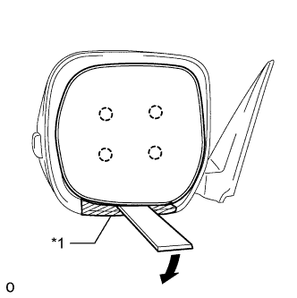
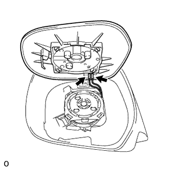
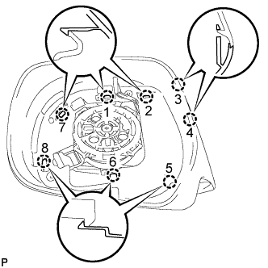
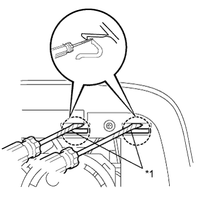
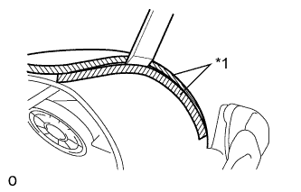
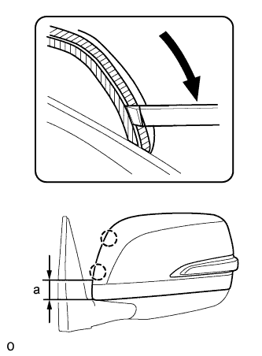
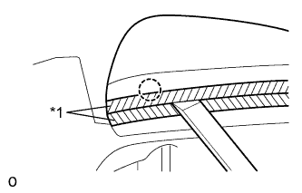
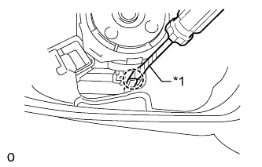
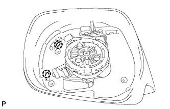
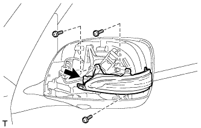

SIDE TURN SIGNAL LIGHT ASSEMBLY > REMOVAL |
| 1. REMOVE OUTER REAR VIEW MIRROR LH |
Remove the outer rear view mirror LH (Click here).
| 2. REMOVE OUTER REAR VIEW MIRROR ASSEMBLY LH |
|  |
Push the upper part of the mirror surface and tilt it.
Using a moulding remover, detach the 4 claws and separate the outer mirror from the mirror body.
| *1 | Protective Tape |
|  |
Disconnect the 2 connectors and remove the outer mirror.
| 3. REMOVE OUTER MIRROR COVER LH |
|  |
|  |
Using 2 screwdrivers, detach the 2 claws.
| *1 | Protective Tape |
Insert a screwdriver into the slot as shown in the illustration and push on the outer mirror body to create a space between the outer mirror body and outer mirror cover.
| *1 | Protective Tape | *2 | Rib |
| *a | Inner Side of Outer Mirror Cover | - | - |
|  |
Insert a moulding remover into the space made between the outer mirror body and outer mirror cover.
| *1 | Protective Tape |
|  |
Slide the moulding remover downwards as shown in the illustration to detach the 2 claws.
| Area | Specified Condition |
| a | 40.0 mm (1.57 in.) |
Remove the moulding remover.
|  |
Insert a moulding remover between the outer mirror cover and outer mirror body as shown in the illustration and detach the claw.
| *1 | Protective Tape |
|  |
Using a screwdriver, detach the claw.
| *1 | Protective Tape |
|  |
Detach the 2 claws and remove the outer mirror cover.
| 4. REMOVE SIDE TURN SIGNAL LIGHT ASSEMBLY LH |
|  |
Remove the 3 screws and light.
Disconnect the connector.